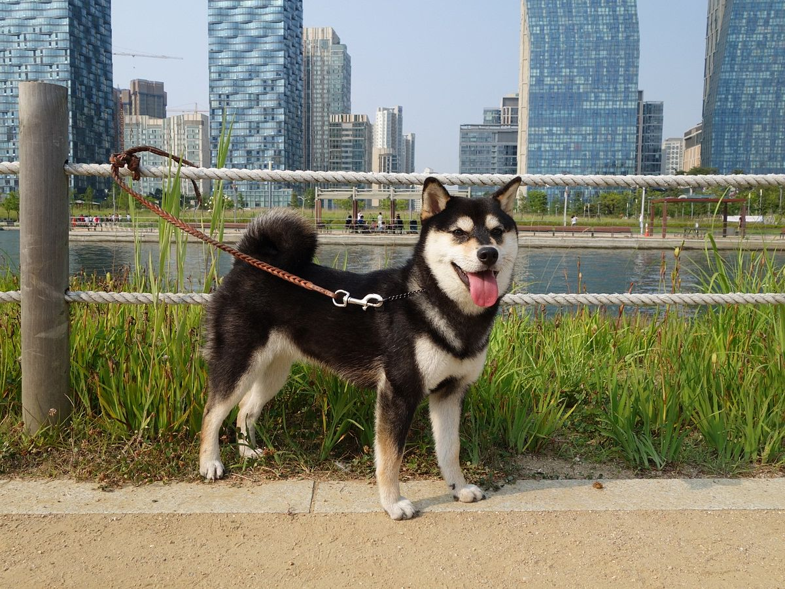
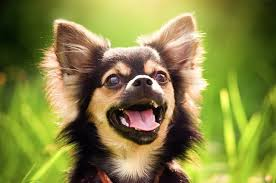
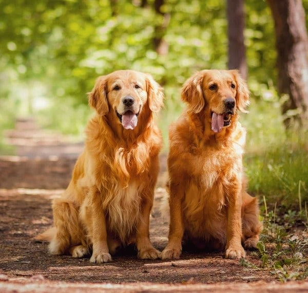
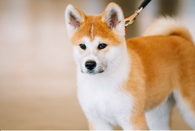

Những người bạn bốn chân
"Bạn thích sự năng động?"
"Bạn thích cảm giác luôn có người chờ mình khi trở về nhà?"
Vậy hãy thử xem qua những "người bạn" đáng yêu và trung thành này nhé!
 Husky
Husky
- Lông:
- Dày, chịu được cái lạnh từ -50 đến -60°C
- Husky thay lông tơ thường xuyên, nếu sống cùng con người thì cần chải lông hàng tuần.
- Thường gặp các màu lông ở Husky như đen-trắng, nâu (đỏ)-trắng, xám-trắng, trắng, đặc biệt màu lông hiếm Agouti.
- Hầu hết sẽ có chân, mõm, đốm cuối đuôi là lông trắng.
- Màu mắt:
- Đa dạng như xanh da trời, xanh nước biển, màu hổ phách, xanh lá cây, hoặc nâu.
- Một số con có thể có 2 mắt với mỗi mắt là một màu khác nhau.
- Có thể có một hoặc cả hai mắt có màu pha trộn (parti-colored) nửa xanh nửa nâu.
- Mũi:
- Lông xám thì mũi có màu đen.
- Lông đen thì có mũi nâu.
- Lông nâu thì có mũi đỏ xẫm.
- Lông trắng thì mũi màu xám nhạt.
- Kích thước:
- Husky đực: cao khoảng 21 đến 23 inch (53 đến 58 cm) và nặng 45 đến 60 pound (20 đến 27 kg).
- Husky cái: cao khoảng 20 đến 22 inch (51 đến 56 cm) và nặng khoảng 35 đến 50 pound (16 đến 23 kg).
- Tính cách:
- Là giống chó thân thiện với trẻ em.
- Chúng thường hay cụp đuôi nếu không có hoạt động, khi chạy nhảy hoạt động chúng thường uốn cong đuôi lên lưng để cơ thể có thêm độ ấm. Đây cũng là đặc điểm chung của một số giống chó có nguồn gốc từ xứ lạnh như Akita, Alaskan Malamute hay Samoyed.
- Khi ngủ chó Husky sẽ vòng đuôi qua mõm để giữ ấm cho mũi. Chúng sẽ hạ thấp đuôi khi thư giãn và dựng cong đuôi khi phấn khích hoặc tò mò.
- Chúng thích liên lạc, giao tiếp với bằng cách hú hơn là sủa. Chúng có xu hướng đi lang thang và tìm cách trốn thoát sự tù túng.
- Đa phần có dấu hiệu tăng động, phá phách khi sống nuôi nhốt trong nhà chật hẹp. Chó Husky thích chạy vì đó là bản năng của chúng.
- Chó Husky sẽ hú khi nó cảm thấy bị bỏ rơi hay cô đơn.
- Chó Husky đứng thứ 45 trong bảng xếp hạng những giống chó thông minh nhất.
Nguồn tham khảo.

Shiba Inu
- Màu lông:
- Màu đỏ, đen và nâu, hoặc màu vừng (màu đỏ với những sợi ngã sang đen), với một lớp lông lót màu kem, màu da bò, hoặc màu xám.
- Nó cũng có thể có màu trắng (kem), mặc dù màu này được xem là một "lỗi nghiêm trọng" bởi Hiệp hội chó giống Mỹ và không bao giờ được nuôi trong các chương trình.
- Kích thước:
- Cân nặng
- Đực: 10kg
- Cái: 8kg
- Chiều cao
- Đực: 35 – 43cm
- Cái: 33 – 41cm
- Cân nặng
- Tính cách:
- Tính tự lập và đôi khi còn hung hăng.
- Giống chó cũng tương tác khá tốt với mèo.
- Trung thành và tình cảm với những người có được sự tôn trọng của nó. Nó có thể hung dữ với những con chó khác.
- Khi đủ kích động hay không vui, nó sẽ phát ra một tiếng thét lớn và cao.
- Một số bệnh thường gặp ở Shiba Inu: dị ứng, thanh quang nhãn, cườm thủy tinh thể mắt, loạn sản xương hông, quặp và trật xương bánh chè. Nguồn tham khảo.
 Samoyed
Samoyed
- Màu lông:
- Màu vàng
- Trắng
- Kem và hơi hung vàng
- Kích thước:
- Cân nặng
- Đực: 20 – 30kg
- Cái: 16 – 20kg
- Chiều cao
- Đực: 51 – 56cm
- Cái: 46 – 51cm
- Cân nặng
- Tính cách:
- Rất thông minh, ưa yên ổn.
- Mạnh mẽ, năng nổ và rất linh hoạt.
- Thân thiện và thích chơi đùa.
- Một số bệnh thường gặp ở Samoyed: các bệnh về máu, tiểu đường và có nguy cơ bị dị ứng da. Nguồn tham khảo.
 Corgi
Corgi
- Màu lông:
- Lông thay đổi độ nhạt theo độ dày của thông (thường thì hai bên vai sẽ nhạt hơn).
- Thường rụng lông chủ yếu vào mùa xuân và mùa thu và có thể rụng hàng năm, với những con cái thì thường rụng khi nắng nóng.
- Corgi Cardigan Welsh
- Màu đỏ – trắng, tricolor giống Pembroke Welsh Corgi.
- Màu Merle bao gồm nhiều màu như: xanh nhạt, xám, đen, rám nắng hoặc đỏ hòa quyện vào nhau, tạo ra các mảng hoặc ‘chấm’ lông lốm đốm trông khá thú vị.
- Màu đen trắng, tông đen sẽ là tông chủ đạo bao phủ hầu hết phần lưng kết hợp màu vàng rỉ sét ở mặt, tai và chấm điểm ở một vài nơi trên cơ thể.
- Pembroke Welsh Corgi
- Màu đỏ-trắng.
- Chó Corgi màu tricolor đa phần thường mang màu đỏ, đen, vàng và sự phân bố các mảng màu lông là khác nhau tùy thuộc vào từng cá thể.
- Đan xen những mảng lông trắng là lông màu muối tiêu, tùy vào từng cá thể mà màu muối tiêu đậm nhạt khác nhau.
- Tương tự giống màu đỏ – trắng nhưng màu lông chính sẽ nhạt hơn hường là vàng hoặc nâu cam nhạt.
- Tai:
- Có đôi tai dựng đứng cân đối và có hình tam giác đều.
- Hơi thuôn nhọn đến một điểm tròn.
- Mặt:
- Giống loài cáo nên nhiều nơi hay gọi ngắn gọn giống chó này là Foxy Dog.
- Đuôi:
- Các trạng thái tiêu chuẩn của AKC đuôi không được dài hơn 2 inch (5 cm).
- Ở nhiều quốc gia, việc cắt đuôi đã bị coi là bất hợp pháp.
- Kích thước:
- Chiều cao vào khoảng 25-30cm và cân nặng từ 9-13kg.
- Giống chó này sẽ phát triển đầy đủ kích thước, cân nặng đạt tiêu chuẩn khi 9 tháng tuổi.
- Pembroke khá tham ăn, do đó rất dễ bị béo phì. Cân nặng của chúng có thể lên đến 20 kg nếu bạn cho ăn quá nhiều mà không thường xuyên tập thể dục.
- Tính cách:
- Là một giống chó sống rất tình cảm, thích tham gia vào các hoạt động trong gia đình và thường có xu hướng đi theo chủ.
- Rất dễ huấn luyện và được xếp hạng là loài chó thông minh thứ 11 trong cuốn sách The Intelligence of Dogs của Stanley Coren.
- Hoạt động như những con chó canh gác do tính cảnh giác và có xu hướng chỉ sủa khi cần thiết. Đôi lúc thích gây hấn.
- Do bản năng chăn gia súc, chúng thích đuổi theo bất cứ thứ gì di chuyển, vì vậy tốt nhất là bạn nên giữ chúng bên trong những khu vực có hàng rào.
- Do bản năng chăn gia súc, chúng thích đuổi theo bất cứ thứ gì di chuyển, vì vậy tốt nhất là bạn nên giữ chúng bên trong những khu vực có hàng rào.
- Chó Corgi cực kì năng động. Bạn nên dẫn chúng ra ngoài chơi thường xuyên, cho chạy nhảy và nô đùa mỗi ngày để giải phóng năng lượng. Đồng thời, giúp tiêu hao calo, tránh căn bệnh béo phì rất hay gặp ở giống chó này.
- Một số bệnh hay gặp ở Corgi: Bệnh tổn thương cột sống, bệnh nấm, ghẻ, bọ chét trên da, bệnh béo phì,… Nguồn tham khảo.
 Dachshund
Dachshund
- Màu lông:
Chia làm ba loại: lông mượt, lông ngắn và lông dài, mỗi loại có cá tính hơi khác nhau.- Đơn sắc thường có màu lông vàng hoặc nâu đỏ.
- Màu thường có màu đen sẫm, nâu hoặc xám điểm lẫn màu hạt dẻ sang.
- Dachshunh lông mướt là giống thuần chủng.
- Dachshund lông dài là kết quả của sự đột biến gien và lai tạo có chọn lọc với giống chó Đức Spaniel.
- Dachshund lông ngắn là sự kết hợp giữa Dachshund thuần chủng, Schnauzers, và Dandie Dinmont Terriers.
- Kích thước:
- Trung bình: 16 - 32 pounds
- Nhỏ: dưới 11 pounds
- Tính cách:
- Rất thông minh.
- Rất trung thành.
- Lúc còn nhỏ rất thích sủa và sủa khá to so với kích thước của chúng.
- Thích đào bới.
- Một số bệnh hay gặp ở Duchshund: bệnh đĩa xương sống, bệnh về tim, đái đường và béo phì. Nguồn tham khảo.

Chihuahua
- Lông
Hai loại: lông ngắn, lông dài.- Màu vàng cát
- Nâu hạt dẻ
- Màu bạc
- Xanh thép
- Nâu nhạt
- Đen nâu
- Pha trộn lẫn các màu
- Kích thước:
- Cân nặng: 1.8 – 2.7kg
- Chiều cao: 15 – 25cm
- Tính cách:
- Can đảm, cực kỳ sống động, kiêu hãnh và mạnh dạn.
- Khá nhanh nhẹn,thông minh,có thính giác phát triển mạnh.
- Đặc biệt trung thành và rất quấn chủ, thậm chí còn có thể biết ghen tỵ.
- Chihuahua là loại chó khá hung hăng.
- Một số bệnh thường gặp ở Chihuahua: bệnh màng sừng tuyến lệ hay đục thủy tinh thể thứ cấp, dễ bị ngạt thở bởi dây xích cổ, dễ mắc các bệnh về răng lợi, thấp khớp, không chịu được lạnh, dễ bị căng thẳng, béo phì, dễ bị gãy xương. Nguồn tham khảo.

Golden Retriever
- Màu lông:
- Vàng kem đến vàng nâu
- Màu đỏ không được công nhận
- Kích thước:
- Cân nặng:
- Đực: 29 – 34kg
- Cái: 25 – 29kg
- Chiều cao:
- Đực: 56 – 61cm
- Cái: 51 – 56cm
- Cân nặng:
- Tính cách:
- Ưa hoạt động, chơi đùa.
- Rất trung thành và thông minh.
- Dễ dạy dỗ và luôn tỏ ra kiên nhẫn và dịu dàng đối với trẻ nhỏ.
Nguồn tham khảo.
 Chó Phú Quốc
Chó Phú Quốc
- Màu lông:
- 4 màu cơ bản gồm đốm, đen, vàng và vện (sọc)
- Ngày nay màu lông đã có nhiều sự lai tạp.
- Lông mượt sát (1–2 cm) rất ngắn.
- Kích thước:
- Cân nặng:
- Đực: 15 – 20kg
- Cái: 12 – 18kg
- Chiều cao:
- Đực: 50 – 55cm
- Cái: 48 – 52cm
- Cân nặng:
- Tính cách:
- Là giống chó săn rất giỏi.
- Rất trung thành và thông minh.
Nguồn tham khảo.

Akita Inu
- Màu lông:
- Màu trắng tuyền, đỏ, màu hạt vừng và vằn vện.
- Màu đen không được chấp nhận.
- Kích thước:
- Cân nặng – Akita Inu
- Đực: 27 – 42kg
- Cái: 25 – 36kgs
- Chiều cao – Akita Inu
- Đực: 64 – 69cm
- Cái: 58 – 64cm
- Cân nặng – American Akita
- Đực: 45 – 59kg
- Cái: 39 – 45kg
- Chiều cao – American Akita
- Đực: 66 – 71cm
- Cái: 61 – 66cm
- Cân nặng – Akita Inu
- Tính cách:
- Ngoan ngoãn, dễ bảo, nhưng đôi khi cũng tỏ ra cứng đầu.
- Thông minh.
- Chúng rất hung dữ đối với các con chó và vật nuôi khác.
- Một số bệnh thường gặp: các bệnh về máu, hệ miễn dịch, bệnh ngoài da, mắt. Nguồn tham khảo.